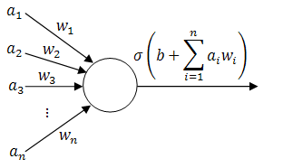

Il Jae Lee
Programmer with deep interest in artificial intelligence.
I am currently in search for AI PhD positions. Please reach out if your lab is recruiting.
Email: iljae [at] umich [dot] edu
Keybase: @agiantwhale
GitHub: @agiantwhale
Research
Currently an undergraduate researcher in Prof. Corso's Vision and Perceptual Machines Lab at the University of Michigan. Special focus in reinforcement learning utilizing sequential and recurrent deep learning models.
Academic History
University of Michigan, College of Engineering.
Bachelors, Computer Science Major. 3.9/4.0 GPA.
Expected Winter 2018 graduation.
- EECS 445: Introduction to Machine Learning - A
- EECS 492: Introduction to Artificial Intelligence - A+
- EECS 301: Probabilistic Methods in Engineering - A
- MATH 214: Linear Algebra - A+
Awards
- EECS Scholar, 2018.
(Awarded to seniors with GPA of 3.9 or higher) - Dean's List, 2015, 2016, 2017.
- University Honors, 2016, 2017.
- James B. Angell Scholar, 2018.
Professional Experience
- Facebook, Inc. New York City. Summer 2018.
Incoming internship. Messaging Infra. Responsibilities TBD. - SalesforceIQ. Palo Alto, CA. Summer 2017.
Data engineering intern. Worked on streaming (real-time) feature extractors from raw text data to be fed into a machine learning pipeline. Used Scala, Apache Kafka, Apache Spark. - Fountain. San Francisco, CA. Summer 2016.
Web development intern. Implemented features to the main web application. Wrote large database migrations with guaranteed production uptime. Used Ruby on Rails, PostgreSQL, ReactJS. - Solidware. Seoul, South Korea. Summer 2015.
Software engineering intern. Implemented various scripts to improve internal workflow. Implemented various visualizations to machine learning models. Used C++, MATLAB, AngularJS.
Skillset
- Languages: C++, Python, MATLAB, Scala, JavaScript, Latex.
- Machine learning: TensorFlow, PyTorch, Intel BigDL.
- Data processing: Apache Spark, Apache Kafka, PostgreSQL.
- Experience implementing & debugging large deep learning models.
- Experience scaling & maintaining mission-critical systems with zero downtime.
- Fluent in Korean & English.